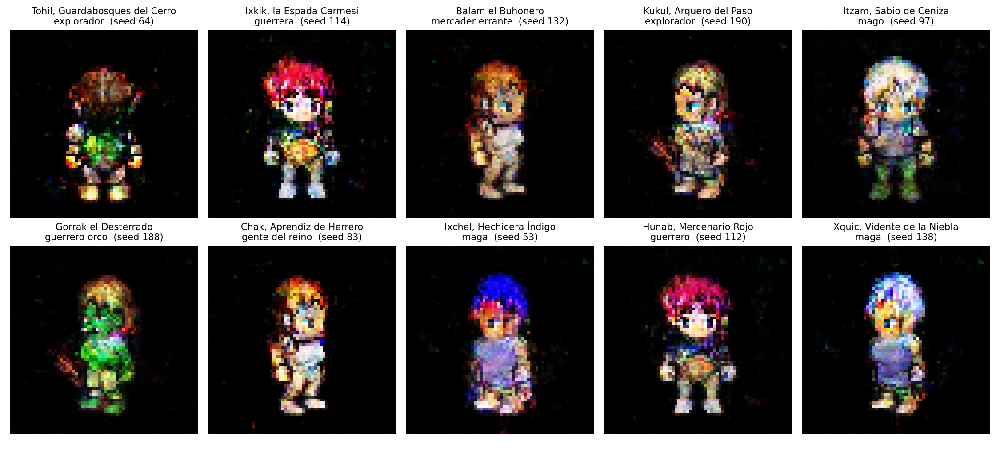
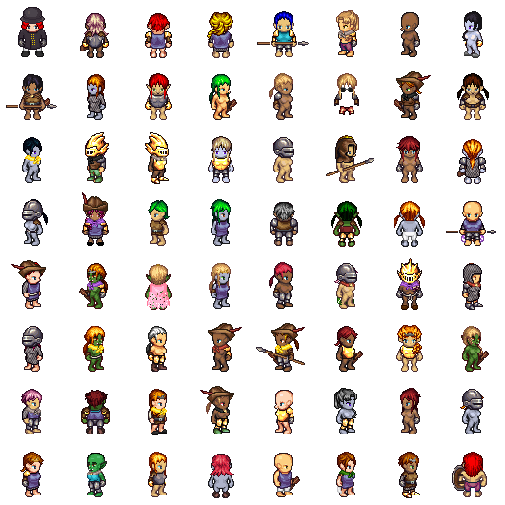
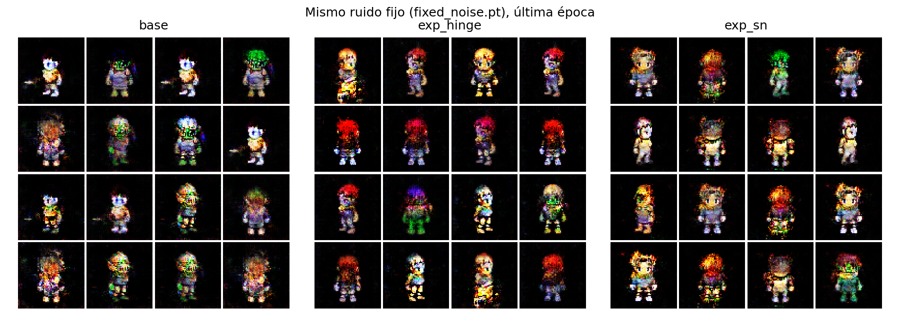
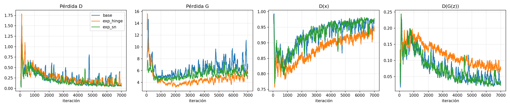
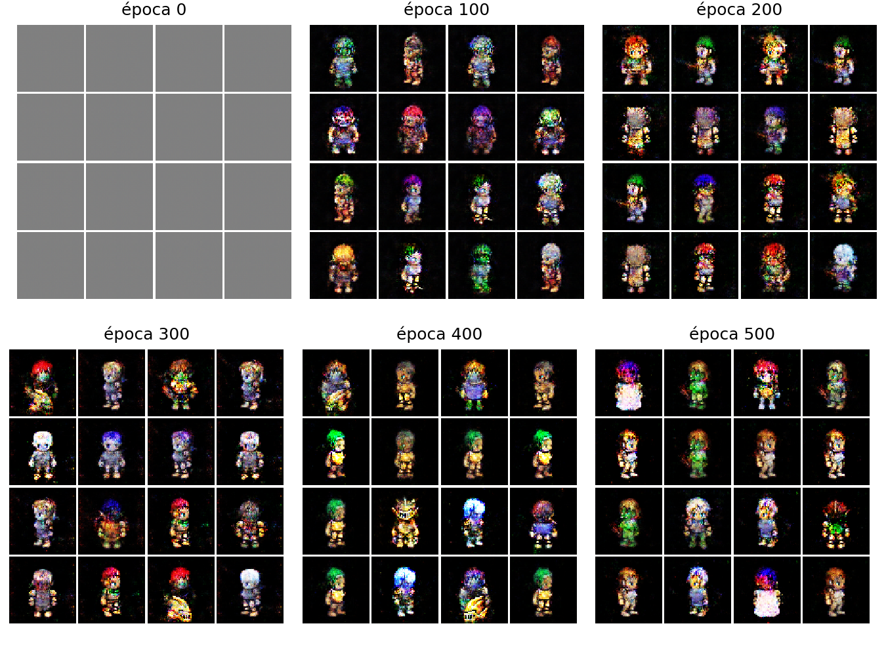
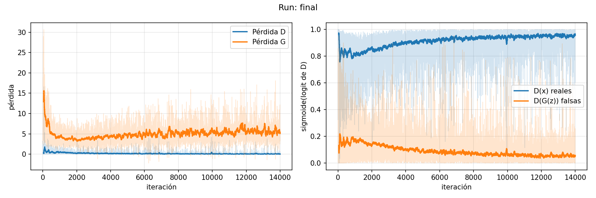
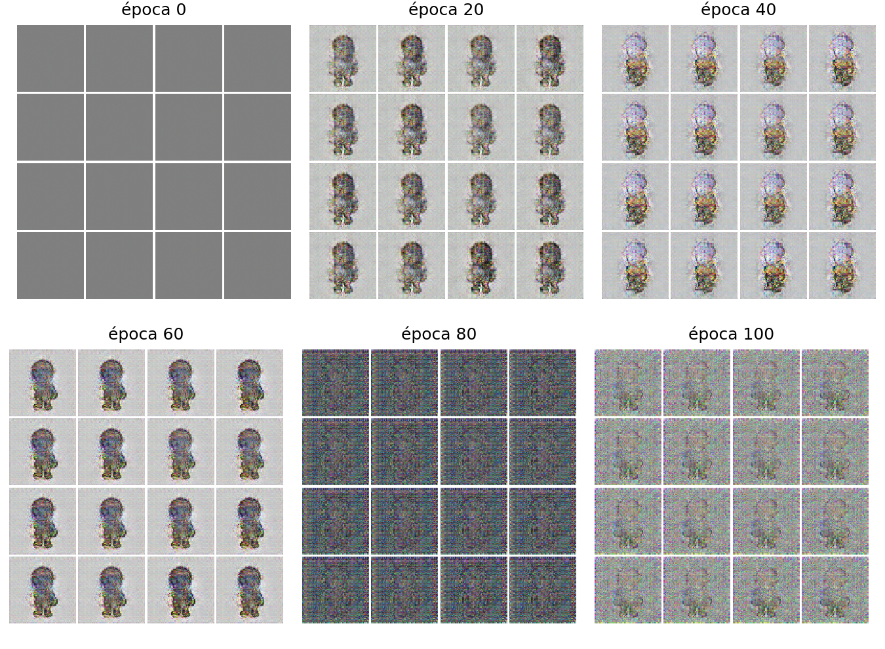
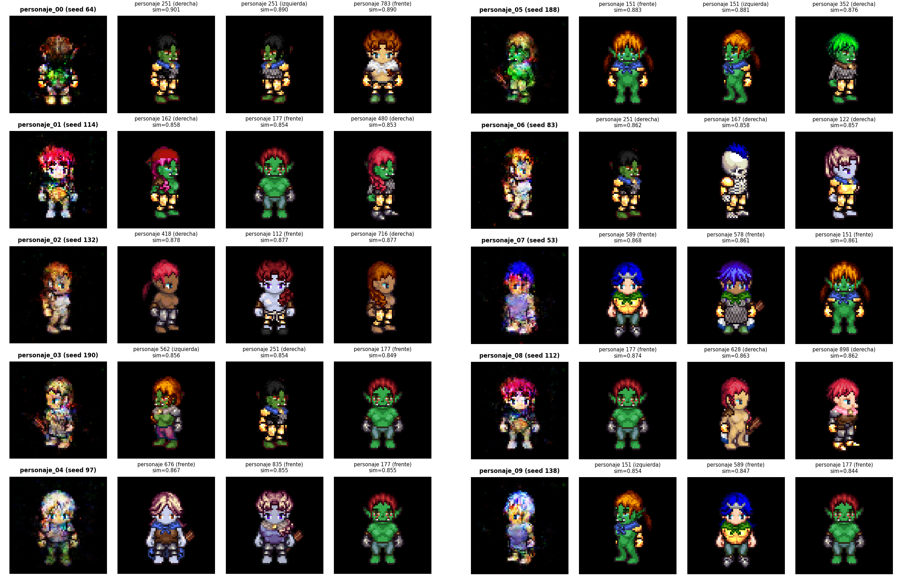
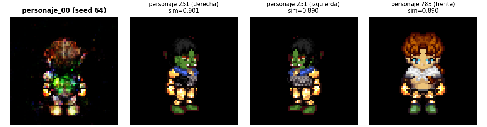

Andrés Mazariegos · June Herrera
Un reino de fantasía medieval en pixel art RPG de 16 bits: guerreros, magos, exploradores y gente común, de noche (fondo negro).

TinyHero (A. Mikołajczyk), hecho con el generador LPC. CC-BY-SA 3.0 / GPL 3.0.
RGBA → fondo negro → [−1, 1] → flip horizontal
Sin recorte ni cambio de tamaño · batch 128

Es la del tutorial de PyTorch: la entendemos línea por línea y entrena en ~24 min en una T4.
Semilla 42 · Adam 2e-4 · BCE no saturante · 250 épocas · ruido fijo 1234
loss: hingeHipótesis (antes de entrenar): hinge mejorará la estabilidad y la diversidad porque no satura cuando D está seguro. Útil si hay menos filas repetidas y la diversidad sube.

Se cumple a medias → el modelo final usa hinge.
spectral_norm_d: trueHipótesis (antes de entrenar): SN mejorará la estabilidad porque limita a D y G no se queda sin gradiente. Útil si la pérdida de D no colapsa a ~0 y la diversidad no baja.

Refutada. Probable causa: dejamos BatchNorm en D (para cambiar una sola cosa) y anula a SN.

Ni colapso total ni divergencia.
Sí colapso parcial: muchos comparten color de pelo.

D cada vez más fuerte = pocos modos en la galería.

G aprendió a ignorar z y tras la época 60 divergió a ruido.
SN, hinge, ruido, dropout, etiquetas ruidosas: nada.
Fondo negro. Lo hicimos el nuevo control y re-entrenamos todo.
k-means (k = 10) sobre features ResNet-18 + revisión visual: uno por cluster.
Se regenera píxel a píxel:python -m src.gallery --regenerate

La GAN recombina piezas: pelo de uno, cuerpo y ropa de otro.
Ojo: cada personaje real aparece en 4 vistas, y ResNet-18 se fija mucho en el color.

Tohil (personaje_00): su vecino, el personaje 251 (sim 0.90), aparece en dos vistas.
La GAN no inventa desde cero: recombina las piezas del generador LPC, con pocos modos.
| Evidencia | Diap. | Conclusión | Limitación |
|---|---|---|---|
| Rejillas base / hinge / SN | 4–5 | Hinge más nítido; SN no ayuda | Una rejilla de 16 z por run |
| Diversidad y novedad | 4–5 | Hinge +2 %; SN −12 % | ResNet-18 no es juez ideal; un run por config. |
| Rejilla del modelo final | 6 | Sin colapso total ni divergencia en 500 épocas | 16 z no muestran el colapso parcial |
| Curvas de pérdida | 5, 7 | Estable; D gana terreno poco a poco | BCE y hinge en escalas distintas |
| Pruebas con fondo blanco | 8 | El fondo blanco provoca el colapso | Hallazgo empírico, sin causa probada |
| Galería + tasa de selección | 9 | 10 de 200, distintos y con nombre y clase | Pares parecidos: 02/06, 01/08, 07/09 |
| Vecinos más cercanos | 10 | Ninguna copia (sim ≤ 0.90) | 4 vistas por personaje; ResNet-18 prioriza color |
| Regeneración exacta | 9 | Galería idéntica píxel a píxel | En CPU, float64 |